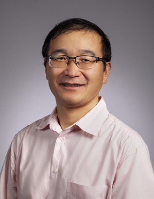
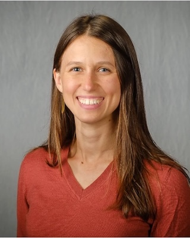
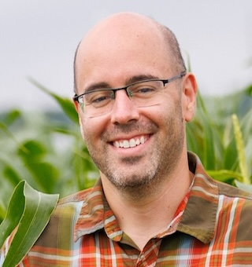
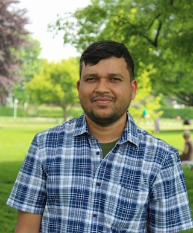
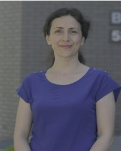
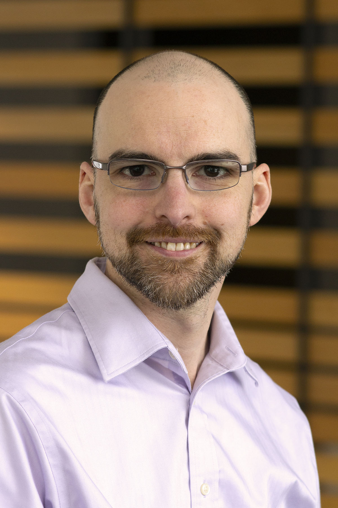

University of Missouri, Donald Danforth Plant Science Center
Talk title: Advancements in Genetic Toolkits for Plants and Their Applications
Dr. Bing Yang is the Curators’ Distinguished Professor at the University of Missouri - Columbia, and a member and Principal Investigator at Donald Danforth Plant Science Center in St. Louis. He received PhD degree in plant pathology at Kansas State University. Yang’s research areas include developing and applying gene editing tool kits for basic understanding of disease biology of crops, as well as for genetically engineering of crop plants with improved traits. Specifically, his group has developed a suite of tool sets for high-efficiency genome editing in crop plants such as rice, maize, wheat, sorghum and soybean. His research also focuses on basic understanding of host susceptibility/resistance to bacterial infection and using genome editing tools to engineer disease resistant rice varieties.

University of Kentucky
Talk title: Breeding Nutritious and Resilient Small Grains for the Mid-South
Dr. Lauren Brzozowski is an Assistant Professor of Molecular Plant Breeding & Genomics at University of Kentucky. She began her position at University of Kentucky in 2022, after completing her Ph.D. and postdoctoral work at Cornell University. Her research program focuses on understanding the genetic basis of climate resilience traits, like resistance to biotic and abiotic stresses, as well as traits contributing to human nutrition. She also breeds new regionally adapted varieties of winter oats and other small grains for Kentucky farmers, leveraging genomic tools to accelerate breeding progress.

University of Nebraska-Lincoln
Talk title: Functional Genomics via Field-scale Transcriptomics
Dr. James Schnable is the Nebraska Corn Checkoff Presidential Chair at the University of Nebraska-Lincoln. His research focuses on integrating new technologies and capabilities from engineering, computer science, and statistics into the study of maize and sorghum. James has also founded three companies in the fields of bioinformatics, climate resilient agriculture, and precision agronomy, translating scientific discovery into real-world impact. He is the recipient of the 2026 NAS Prize in Food and Agriculture Sciences for pioneering breakthroughs in plant genomics and quantitative genetics.

University of Missouri
Talk title: Harnessing Plant Biosynthesis and Metabolic Diversity for Novel Pharmaceutical and Agronomical Applications
Dr. Prashant Sonawane is an Assistant Professor in the Department of Biochemistry, CAFNR, at the University of Missouri. Dr. Sonawane joined the Mizzou in August 2024. Dr. Sonawane's research group (Plant Metabolism Lab) is focused on exploring the spectacular chemical diversity of specialized (secondary) molecules produced by plants and using synthetic biology and metabolic engineering platforms to pioneer applications in human health, nutrition, medicine and agriculture.

Eastern Illinois University
Talk title: Decoding the Genetics of Plant Response to Developmental and Environmental Cues
Dr. Maryam Rahmati Ishka has been an Assistant professor at the Department of Biological Sciences at Eastern Illinois University since August 2025. Her lab’s research focus is on decoding the genetic elements of plant response to developmental and environmental cues, revealing how plants adapt across all developmental scales. The overarching goal of Dr. Ishka’s research is to understand, identify, and translate the genetic mechanisms of plants' plasticity. Dr. Ishka has received several honors, including the 2023 Sahyadri Outstanding Postdoctoral Fellow Award and the 2025 American Society of Plant Biologists Women’s Young Investigator Award.

Corteva Agriscience
Talk title: AI and Computational Biology in Corteva R&D
Dr. Justin Gerke is a University of Missouri alumnus and a Senior Data Science Manager and Distinguished Laureate at Corteva Agriscience, where he leads data science and computational biology initiatives applying genomics and machine learning to agricultural innovation. The team he leads contributes analytical and modeling capabilities across both Corteva’s seed and crop protection businesses, supporting research, development, and decision‑making from early discovery through product advancement. Justin earned his undergraduate degree in Biology at the University of Missouri, where he developed a strong interest in genetics research. He went on to earn a PhD in Molecular Genetics and Genomics from the Washington University School of Medicine, studying yeast genomics. As a Life Sciences Research Foundation fellow, he expanded his genetics training at Princeton University by studying C. elegans population genomics. He later returned to crop genetics research at the University of Missouri before joining Pioneer (now Corteva) in 2011. His work has helped translate advances in genomics and data science into practical tools for agriscience innovation.